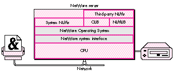
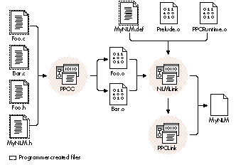

Apple and Novell recently announced a PowerPC version of NetWare. Under NetWare,
network services such as file servers, print spoolers, and electronic mail dispatchers
are written as NetWare loadable modules, or NLMs. By providing a software layer
between the NLMs and the hardware they run on, NetWare makes more efficient use of
the available hardware, improves portability, and allows programs to run on mixed
networks tying together different platforms. This article shows you how to get started
with NLM development.
Novell's NetWare has been around for years, and is considered by many to be the
networking standard in the DOS/Windows world. NetWare servers have always been
able to handle AppleTalk clients, too, but they have not been as prevalent in
predominantly Macintosh environments. As a result, most Macintosh developers have
never had the need or inclination to learn how to write software for NetWare servers.
With Apple's NetWare for PowerPCTM, you can now port your existing network
products, or create new ones, to run on Apple Workgroup Servers under NetWare.
In this article, we'll take a brief tour of the NetWare environment and what it takes to
write software for it. The article is intended primarily for developers of networking
software, particularly running on networks using Apple Workgroup Servers or
multiple platforms -- but you should also find it of interest if you're just curious
about NetWare or want to know about the available options for writing networking
software.
NetWare is anetwork operating system, a framework for providing network services.
Instead of running application programs, NetWare runsNetWare loadable modules, or
NLMs, which typically implement network-based services such as file storage,
printing, and electronic mail. An NLM can be loaded either on demand or automatically,
and uses the NetWare Operating System (NOS) to allocate memory, communicate with
clients, and interact with the underlying hardware. Once loaded, an NLM becomes an
integral part of the operating system, with no architectural "middlemen" to slow it
down. Figure 1 shows an overview of the NetWare architecture.
The information in this article is based on Apple's NetWare for PowerPC, an
implementation of Novell's NetWare 4.1. Earlier versions of NetWare are still in wide
use, but NetWare 4.0 added some new features such as directory services and
improved security. NetWare 4.1 is a more robust version of 4.0 and improves still
further on these new features. Though earlier versions of NetWare client software can
connect to NetWare 4.1 networks, they may not be able to use all the features of the
available NLMs. If you want your NLMs to support all versions of NetWare clients, the
NOS provides the necessary support libraries.*

Figure 1. The NetWare architecture
If you're a Macintosh developer, why should you make the leap to NetWare
development? To make your product available to the greatest number of users.
NetWare is used on more than 60% of all servers in the DOS-compatible world. Here
are some of the reasons NetWare is so popular.
EFFICIENT RESOURCE ALLOCATION
In a typical Macintosh network installation, a single server machine provides file
storage, printing service, a mail server, and maybe even a scheduling server or other
network services. Any one of these services might deliver acceptable performance on
its own; but when you try to put them all on the same "box," they must contend for
limited resources such as processor time, memory, and disk access. The result is that
they all suffer performance degradation: even on a blindingly fast machine, such
resource contention can slow all of your network services to a crawl.
NetWare helps alleviate this problem in three ways:
CENTRALIZED DIRECTORY SERVICES
One of the biggest headaches for many network administrators is maintaining user and
group lists for multiple servers and services. A single user may have an account on
two or three file servers, a mail server, and who-knows-what else. Keeping the
different accounts for that one person up to date can be a significant chore.
NetWare helps ease this burden by making centralized directory services available to
all NLMs. NetWare users log directly into the network itself, not into a particular
server. Using interfaces that NetWare provides, NLMs can access the directory
services and use them for authentication. Thus a mail server and a file server, for
example, can share the same user list instead of each maintaining its own. This
centralized approach to directory services benefits everyone. NLM developers don't
have to write the code to store, edit, and maintain their own user lists; network
administrators only need to maintain a single centralized directory; and users don't
have to remember half a dozen different passwords and authenticate themselves every
time they move from one network service to another.
PORTABILITY
Networks are growing larger everywhere, as users discover that computers linked
together, sharing services over a network, are far more useful than isolated
workstations. While this growth presents many opportunities for developers of
network services, it also presents the problem of diversity. The days are gone when a
company's computers all ran the same operating system. Today, Macintosh computers,
DOS-based PCs, and UNIX workstations must all coexist on the same network.
Porting a network service such as a mail server from one hardware platform to
another can take a great deal of time and effort. Building your server as an NLM,
however, gives it instant portability to any platform for which NetWare is
implemented. NetWare's uniform API "virtualizes the hardware," so that NLMs don't
have to interact directly with the platform they're running on. Since the interface to
NetWare is the same from one platform to another, porting your NLM is a simple
matter of recompiling.
By now you should be convinced that NetWare has a lot of advantages to offer. The rest
of this article details what it takes to build an NLM that will run on NetWare for
PowerPC. Included on this issue's CD is sample code for a simple multithreaded NLM.
If you're already developing software for Power Macintosh computers, you probably
have most of the tools you need to develop software for NetWare for PowerPC. In the
next section, we'll see how to use these tools to do NetWare development in a Macintosh
environment; but there are non- Macintosh options as well:
If you already have the hardware and software, either of these non-Macintosh options
can help you quickly begin producing high-quality code. But if you aren't already using
an RS/6000 or a DOS- compatible system, you'll probably do better to go the
Macintosh route. Purchasing an RS/6000 can be quite expensive, not to mention the
additional cost of setup and maintenance. You can get DOS- compatible machines for
much less, but not all of them are compatible with UnixWare. (Any certified
UnixWare reseller should be able to help you determine whether UnixWare will run
on your hardware.)
This article will focus exclusively on Macintosh development options. However,
general information about NetWare's interfaces applies to any development platform
you choose.
NETWARE DEVELOPMENT THE MACINTOSH WAY
MPW Pro (available from APDA) includes a PowerPC C/C++ compiler and linker that
run as tools under Macintosh Programmer's Workshop (MPW). The compiler, PPCC,
produces PowerPC object (.o) files, which you then pass to the PPCLink tool to
produce an XCOFF (eXtended Common Object File Format) file.
Ordinarily, the next step would be to pass the XCOFF file, in turn, to the MakePEF tool,
which turns it into a PEF (Preferred Executable Format) file ready to run as a
Macintosh application. To build an NLM, however, you don't use MakePEF. Instead, you
pass your object files to a special- purpose NLM linker that translates them into a
finished NLM, using information about imports and exports taken from adefinition file
you supply. (See the next section for more information on the structure and contents
of the definition file.) You invoke the NLM linker with an MPW script, NLMLink. As
shown in Figure 2, you pass it your definition file along with the usual PowerPC
runtime library, PPCRuntime.o, and another library, Prelude.o (provided with the
NetWare for PowerPC Software Development Kit), that allows NetWare to load your
NLM. The NLMLink script can also accept a list of .o files as arguments, in which case
it calls the standard PowerPC linker, PPCLink, for you.
To run and test your NLMs, you'll need the developer's version of NetWare for
PowerPC from Novell. You can install it on any Power Macintosh computer.
THE DEFINITION FILE
In addition to your NLM's object (.o) files, you must provide the NLMLink tool with a
definition (.def) file. This file, which is usually namedNLMName .def (whereNLMName
is the name of your NLM), contains information that NLMLink needs in order to turn
your linked object file into a finished NLM. Among other things, the definition file
includes a list of all routines imported to and exported from your NLM. Listing 1
shows an example definition file, taken from the sample NLM on this issue's CD.
The keywords description, copyright, and version give the information that
will be displayed on the NetWare console when the NLM is loaded.

Figure 2. Building an NLM with MPW
The keyword reentrant specifies that the NLM can be loaded multiple times on the
console, but only one copy of the NLM will reside in memory, with all threads sharing
that same copy of the code.
The keywords input and output tell the linker what file or files to read and what to
name the file it produces.
The keywords start and exit identify routines to execute when the NLM is loaded and
unloaded, respectively. The Prelude.o file that you pass to the NLMLink tool defines
default start and exit routines, named _Prelude and _Stop, to set up your NLM's
threads at load time and clean them up at unload. If your NLM is reentrant, you'll
probably supply a start routine of your own to handle reentrant loading; if not, you
can just omit thestartkeyword (to use the default start routine_Prelude). If you
define your own start routine, make sure it calls _Prelude the first time your NLM is
loaded.
The keyword import is followed by a list of the routines that your NLM needs to have
available at run time. These routines usually come from the NetWare C Interface, but
they could be exported by any other NLM running on the server. Any routine your code
calls that is not part of your NLM must be listed here, or the NLMLink tool will report
an error.
Finally, the keyword export is followed by a list of the routines that your NLM makes
available for other NLMs on the server to call. You need not export any routines at all;
however, if you want to give other NLMs access to any of your routines, you must list
them here. (Our sample NLM doesn't actually export any routines, but we've included a
fictitious one in the sample definition file, just for illustration.)
These are just some of the keywords you can use in a definition file. The NetWare for
PowerPC Software Development Kit documentation describes all of the possible
keywords and how to use them.
Listing 1. Example definition file
description "AppleTalk Demo NLM"
copyright "Apple Computer, Inc."
version 1, 1, 1
reentrant
input ATDemo.out
output ATDEMO.NLM
start HandleMultipleLoad
exit _Stop
import
ATAtpClose
ATAtpGet
ATAtpOpen
ATAtpSendRsp
ATDdpNetinfo
ATNbpParseEntity
ATNbpRegister
ATNbpRemove
ATZipGetMyZone
exit
free
GetFileServerName
malloc
printf
strcat
strlen
strncat
_StartNLM
ImportSymbol
_TerminateNLM
_SetupArgv
atexit
__get_errno_ptr
BeginThread
ExitThread
strcpy
export
FooBar
The NetWare C Interface provides more than 1000 functions for interfacing with the
NOS. It's a load-time interface, meaning that function calls are resolved at the time an
NLM is loaded rather than at link time. Trying to document the entire NetWare
interface here would be like trying to summarize all ofInside Macintosh. We can,
however, look at some highlights. The NLMs that make up the NetWare C Interface
include, among others, CLIB (C LIBrary), DSAPI (DirectoryServicesAPI),
THREADS, NWSNUT (NetWare ScreeN UTility), and TLI (TransportLayer
Interface). Together, these NLMs offer interfaces to the following NetWare services:
These services (which are described in more detail below) are actually only a few of
thoseavailable through the NetWare C Interface. Currently, more than 40 different
services(analogous to Macintosh Toolbox managers) are available to developers of
NLMs. The NetWare for PowerPC Software Development Kit contains documentation on
all of these services, as well as the latest development utilities and sample code.
INPUT/OUTPUT
NetWare provides APIs for both synchronous and asynchronous I/O.
DIRECTORY SERVICES
The Directory Services API provides access to the distributed directory services
database on a NetWare 4.1 network. NetWare directory services offer functionality
very similar to that of the Apple Open Collaboration Environment (AOCE) -- in fact,
Apple and Novell are pursuing ways to integrate the two services. Typical calls include
NWDSAuthenticate, NWDSCreateObject, and NWDSSearch.
FILE MANIPULATION
NetWare provides several sets of interfaces for file manipulation. Calls such as open,
fopen, DFSOpen, and AFPOpenFileFork all open a disk file, but take different
parameters and follow different I/O models. You decide which you need, depending on
whether you want speed, convenience, or compatibility.
MEMORY MANAGEMENT
NetWare uses the standard C malloc/free model for memory management. NetWare
doesn't use a virtual-memory scheme to increase a server's memory capacity beyond
that of the available physical RAM, so you must be careful to allocate only as much
memory as you actually intend to use. It's also a good idea to include code for handling
low-memory conditions in a graceful way.
THREADS
NetWare is a nonpreemptive operating system, meaning that each NLM is responsible
for voluntarily giving up control of the processor from time to time, to allow other
NLMs to run. Every NLM has at least one thread of execution, known as themain thread,
created when the NLM is initially loaded. The NLM can then optionally spawn as many
additional threads as it needs. At any given time, exactly one thread is in active control
of theprocessor; all others are temporarily suspended. The NOS maintains arun queue
of such suspended threads awaiting execution.
The NetWare interface provides a set of routines for thread management, including
BeginThread, Delay, EnterCritSec, and ThreadSwitch. The "good citizen" routines
CYieldIfNeeded, CYieldWithDelay, and CYieldUntilIdle yield control of the processor to
give other NLMs their turn at bat. In addition, many other system calls automatically
block (suspend the execution of a thread) while waiting for some external occurrence
such as the arrival of a packet on the network, so it isn't always necessary to
relinquish the processor explicitly.
COMMUNICATIONS
NetWare's AppleTalk interface implements all of the protocols defined inInside
AppleTalk, from the Datagram Delivery Protocol (DDP) to the AppleTalk Filing
Protocol (AFP). NetWare also provides native interfaces to IPX/SPX and TCP/IP. For
greater flexibility, you can use the NetWare Transport Layer Interface (TLI). Because
TLI functions are independent of the underlying transport layer, they allow you to use
a variety of protocols, such as AppleTalk, IPX/SPX, and TCP/IP, without having to
write extra code.
MATH FUNCTIONS
The Math Services API provides common mathematical functions like min, sqrt, and
cos. For maximum efficiency, the implementation on PowerPC servers uses the
processor's built-in floating- point capabilities whenever possible.
HUMAN INTERFACE UTILITIES
Many NLMs present a human interface on the server machine, allowing an operator or
administrator to perform needed server-management tasks. If you want your NLM to
have a graphical (as opposed to a command-line) interface, you can use the NetWare
NLM User Interface Services to create windows, menus, and dialog boxes on the server
console. Although the interfaces aren't as sophisticated as those of the Macintosh
Toolbox, they can help you provide a convenient human interface to your NLM.
To illustrate how NLMs are written, we'll look at two examples. Both will run on any
server running NetWare. You'll find the code for both examples on this issue's CD.
Our first sample NLM is the obligatory "Hello, world" example, which we'll name
HELLO.NLM. The code is short enough that we can show it right here:
/* HELLO.NLM
This NLM prints the traditional message "Hello, world."
on the serve console. Type "Load Hello" on the server
to see it run.
*/
#include <stdio.h>
main()
{
printf("Hello, world.\n");
}
Pretty painless, right? The reason for including this example is to show that writing
an NLM doesn't require you to learn an entirely new programming method. Much of the
programming you do when writing an NLM is the same as if you were writing an
application for Macintosh or UNIX.
Now let's look at another sample NLM, named ATDEMO.NLM. When loaded on your
server, ATDEMO watches for an incoming AppleTalk connection and provides the client
with server statistics on request, such as the number of clients connected, directory
listings, and so forth. (The CD also contains a small Macintosh client application that
connects to the server and queries ATDEMO for this information. The client application
is provided in "fat binary" form so that it can run in native mode on both PowerPC and
680x0 platforms. We won't examine its code in this article, but it's included on the CD
in case you're interested.)
ATDEMO demonstrates three important points about writing NLMs:
The code for the entire NLM is contained in a single file, ATDemo.c. It begins with a list
of #include macros. Some of these, such as stdio.h and stdlib.h, are standard ANSI
includes. Others, such as nwenvrn.h, nwthread.h, and nbp.h, are headers for the NOS.
Remember that all routines you call from these header files, even the ANSI C routines,
are linked at load time and implemented by the NLMs described earlier. Do not use the
ANSI headers from your MPW CIncludes folder -- there may be subtle differences in
the header files that could cause debugging nightmares later on.
Like all C programs, an NLM written in C must have a main routine. Macintosh
applications typically have a structure based on a main event loop:
main()
{
/* Do preliminary setup and initialization. */
...
do {
...
WaitNextEvent(...);
...
} while (1);
/* Do final cleanup and exit. */
...
}
The structure of an NLM is a bit different, because the server itself is doing the event
processing. Instead of polling the system for events and processing them one at a time
in our main thread, we block for action and spawn a separate thread to handle each
incoming event. This removes the bottleneck associated with a single point of event
processing, with each spawned thread doing its own work and blocking only for its own
needs.
The structure of ATDEMO looks like this:
main()
{
/* Do preliminary setup and initialization. */
...
do {
ATAtpGet(...);
...
BeginThread(...);
} while (1);
/* Do final cleanup and exit. */
...
}
At first glance, our NLM seems to spend all its time in a busy do-while loop. In fact,
this is not the case. ATAtpGet is a NOS function that waits to receive an ATP (AppleTalk
Transaction Protocol) packet. Like many other functions in the NetWare C Interface,
ATAtpGet is a blocking function: it suspends execution of the calling thread while
waiting for an ATP packet to arrive, allowing the NOS to run other scheduled threads in
the meantime. The thread calling the blocking function gets placed at the end of the run
queue; eventually it will work its way back to the front of the queue and resume
execution from the point of the suspension. (If our NLM didn't call such a blocking
function, we could instead call ThreadSwitchWithDelay at the end of our do-while
loop, to relinquish control of the processor explicitly and allow other threads to run.)
When the server eventually receives an ATP packet addressed to our NLM, it
reactivates our main thread, causing control to return from the ATAtpGet call and
resume with the next instruction. Our NLM next calls the NOS function BeginThread to
create a new thread to respond to the packet. The actual code issues this call by means
of a subsidiary function, SpinNewSession:
int SpinNewSession(...)
{
int completionCode;
completionCode = BeginThread(HandleClientSession, ...);
return completionCode;
}
BeginThread takes a function pointer as its main parameter, creates a new thread to
execute the function, and adds the thread to the NOS's run queue. When the time comes
to run this thread, the NOS will call the specified function (in this case, an ATDEMO
function named HandleClientSession). Thus, instead of a single thread of execution that
handles all communications with all clients, we have a main thread that waits for new
clients to initiate communications and spins off a subsidiary thread for each such
client connection.
Like our main function, HandleClientSession also has ado-whileloop that uses
ATAtpGet as the main blocking function:
void HandleClientSession(...)
{
/* Allocate data structures and open a connection. */
...
ATAtpSendRsp(...);
do {
ATAtpGet(...);
quitRequest = HandleRequest(...);
if (quitRequest) {
ATAtpClose(...);
ExitThread();
}
} while (1);
}
ATAtpGet will continue getting packets from the client until the client notifies the
server to break the connection. Each time HandleClientSession receives a packet, it
calls another ATDEMO function, HandleRequest, to examine the content of the message
and determine what specific information the client is requesting. When HandleRequest
reports that the client has asked to break the connection, HandleClientSession calls the
NOS function ATAtpClose to close the connection and then destroys the thread with the
NOS function ExitThread.
Here are some key points to keep in mind when writing an NLM or porting an existing
program to NetWare.
Once you've finished developing and testing your NLM, you'll probably want to get it
certified by Novell before you release it to the world. Following the guidelines above
will help make that process as speedy and painless as possible.
This article should give you enough basic information to get started with NetWare and
NLMs. Novell recommends that anyone interested in setting up a NetWare system hire
a trained specialist called a Certified NetWare Engineer, or CNE, to help with the
installation. Many NetWare developers also attend training classes to learn how to port
their existing software or develop new NLMs. If you don't want to go to the time and
expense of a training course, a couple of good books can go a long way to help you learn
what you need to know. See the list at the end of this article for some suggestions.
Before embarking on serious development, you'll definitely want to get Novell's
NetWare for PowerPC Software Development Kit (which should be available soon if not
by the time you read this). In it you'll find a complete set of software and
documentation to assist you in developing your own NLMs. For more information, call
Novell at 1-800-NETWARE (1-800-638-9273). For information from Apple on
NetWare developer programs, call Apple's Developer Support Center at
(408)974-4897 or send a message to AppleLink DEVSUPPORT. In today's networking
environment, more and more products, especially client/server programs, are being
written for multiple platforms. NetWare gives you a convenient way to develop
portable network software without having to rewrite all your code separately for each
new platform. Whether you're porting an existing network application or writing a
new one, you can benefit greatly by doing it in NetWare.
RECOMMENDED READING
Here are some suggestions for further reading on the subject of NetWare and NLMs:
JAMIE OSBORNE (AppleLink JWO) In the short space of a year, Jamie Osborne has
gone from doing three-dimensional user interfaces to working on exception-handling
routines for a PowerPC Memory Manager to programming NetWare NLMs. When he's
not sitting in front of a computer (which, according to his fiancÉe, is "only when he's
sleeping, and maybe not even then"), he keeps busy writing television scripts for
Paramount to reject. He hasn't quite figured out what hereally wants to do with his
life, but he's reasonably certain it involves long days lounging about in a large house
in the hills of New Hampshire.*
Thanks to our technical reviewers Rob Hawley, Bob Heldt, Rich Kubota, Michael
McDaniel, and Clara McKenzie. *
If you found this article interesting and would like to see more in-depth
NetWare articles in the future, send a note to AppleLink NWDEV.*